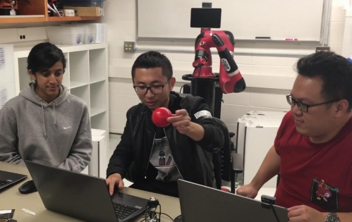
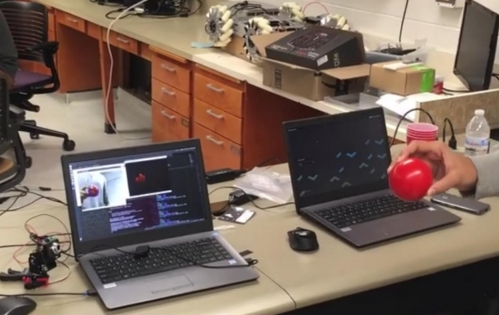

Object Tracking and Servo Motor Control
The goal of this group project was to track a red ball that is front of the webcam. The webcam was fixed to a servo motor mechanism. As the ball moved, the servo motors would also move to track the ball continuously.


The image above shows the red ball being tracked on the laptop screen. This was done with OpenCV, using contour detection. We used the information about the position of the ball to control the motion of the servo motor, using Python. A ROS publisher was used to publish the coordinates of the ball, and a ROS subscriber was used to subscribe to the raw video feed from the laptop's webcam. The video clip below shows the movement of the webcam as the ball is moved.
Skills involved in the project:
- OpenCV
- Python
- ROS